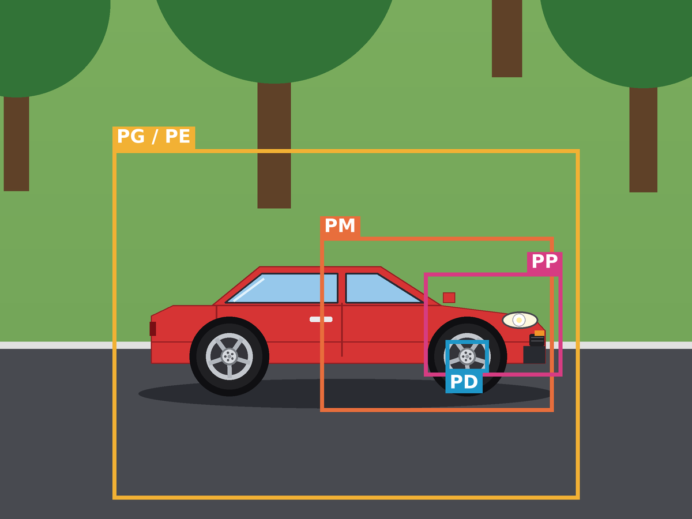

Montaje · Unidad 2
Planos, cortes y reglas del montaje
Tipos de plano, transiciones, tipos de montaje y reglas de corte.
Tres preguntas para nombrar un plano
¿Cuál es el sujeto completo?
Una persona, un coche, una taza o una sola hoja: lo decides tú antes de mirar el encuadre.
¿Cuánto de él entra en el cuadro?
Todo, la mitad, una parte importante o un solo elemento.
¿Cuánto espacio queda alrededor?
Si manda el entorno, el plano es abierto. Si el sujeto llena el cuadro, es cerrado.
Idea clave
El plano mide la relación entre el sujeto y el cuadro.
No importa si hay una cara, un cuerpo, un coche o un paisaje.
Escala de planos · Apuntes UT 2 · pp. 1-2
Misma escala, distinto sujeto
| Plano | En una persona | En un coche |
|---|
| GPG | Una figura minúscula en el paisaje | Un coche pequeño: mandan la carretera y el campo |
| PG / PE | El cuerpo entero, de pies a cabeza | El coche entero, de parachoques a parachoques |
| PM | De la cintura hacia arriba | De la puerta al morro: medio coche |
| PP | El rostro y los hombros | El morro: capó, faro y rueda |
| PPP | Los ojos y la boca | El faro y parte de la rueda |
| PD | Un ojo, una mano, un grano | Un solo elemento: el tapacubos |
Escala de planos · Apuntes UT 2 · p. 1
El sujeto no cambia, cambia el encuadre

Un solo coche, cuatro rectángulos.
Cuanto más pequeño es el rectángulo, más cerrado es el plano.
El rectángulo es la pantalla: lo que queda dentro es lo que ve el espectador.
Escala de planos · Ilustración esquemática
Qué entra en el cuadro
El entorno es el protagonista. El sujeto se ve pequeño, casi un elemento más del paisaje.
Para qué sirve
Situar la acción y dar sensación de escala o de soledad.
Escala de planos · Apuntes UT 2 · pp. 1-2 · Ilustraciones esquemáticas
PG / PE
Plano general o entero
Qué entra en el cuadro
El sujeto se ve completo, de un extremo al otro, con algo de aire alrededor.
Para qué sirve
Mostrar el objeto entero y su forma. Es el plano para identificar qué es.
Escala de planos · Apuntes UT 2 · pp. 1-2 · Ilustraciones esquemáticas
Qué entra en el cuadro
Vemos aproximadamente la mitad del sujeto. El corte cae en el centro del objeto.
Para qué sirve
Acercarnos sin perder del todo el contexto: seguimos reconociendo qué es.
Escala de planos · Apuntes UT 2 · pp. 1-2 · Ilustraciones esquemáticas
Qué entra en el cuadro
Una parte principal del sujeto llena el cuadro. Ya no vemos el objeto entero.
Para qué sirve
Dar importancia a esa parte y empezar a hablar de ella, no del objeto.
Escala de planos · Apuntes UT 2 · pp. 1-2 · Ilustraciones esquemáticas
PPP
Primerísimo primer plano
Qué entra en el cuadro
Nos metemos dentro de esa parte: solo una zona de ella ocupa el cuadro.
Para qué sirve
Intensificar: crea cercanía y tensión.
Escala de planos · Apuntes UT 2 · pp. 1-2 · Ilustraciones esquemáticas
Qué entra en el cuadro
Un único elemento pequeño, aislado del conjunto, llena la imagen.
Para qué sirve
Dirigir la atención hacia un dato concreto: una hoja, un tapacubos, una estrella.
Escala de planos · Apuntes UT 2 · pp. 1-2 · Ilustraciones esquemáticas
El detalle siempre es detalle de algo
La forma
Se mide por cuánto del sujeto entra en el cuadro.
El significado
Es lo que el plano nos hace mirar: aquí una hoja, allí una estrella.
Si el sujeto cambia, el plano cambia: una hoja entera que llena el cuadro es un plano entero de la hoja.
Escala de planos · Ilustraciones esquemáticas
¿Qué plano es?
Primero decide cuál es el sujeto. Después, cuánto de él entra en el cuadro.
Escala de planos · Ilustraciones esquemáticas
Solución y resumen
Gran plano general
La taza es diminuta en la sala. Manda el espacio.
Plano medio
Mitad del árbol: la copa, sin el tronco entero.
Plano detalle
Un solo elemento aislado: el tapacubos.
Para recordar
El plano no depende de la cara.
Elige el sujeto.
Mide cuánto de él entra en el cuadro.
Cuanto más cerrado el plano, menos sujeto y más ocupa el cuadro.
Escala de planos · Apuntes UT 2 · pp. 1-2
Qué hace el montaje
Con dos herramientas, el orden de los planos y su duración, el montaje cumple tres funciones.
Crear espacios
Los planos abiertos y cerrados construyen un lugar que el espectador reconstruye.
Manipular el tiempo
Elipsis, flashbacks y flashforwards comprimen, estiran o reordenan la acción.
Dar sentido
Al yuxtaponer planos nacen relaciones de analogía, contraste, causa y efecto, o incluso poéticas.
Montar es decidir qué plano viene después y cuánto dura.
Apuntes UT 2 · p. 1
Corte, encadenado y fundido
Corte
Sin transición: un plano sustituye al siguiente de golpe.
Encadenado
La imagen se desvanece mientras empieza a verse la siguiente.
Fundido
La imagen se desvanece, normalmente a negro, o sale de él. Rompe el curso narrativo y deja una pausa.
Hay efectos menos habituales, más propios de la realización de TV: cortinillas y barrido (que suele indicar un gran paso de tiempo).
Apuntes UT 2 · p. 3
Unir planos por similitud
2001: Una odisea del espacio
(1968) Un hueso lanzado al aire corta a una nave espacial de forma casi idéntica.
Lawrence de Arabia*
(1962) La cerilla se apaga y el corte nos lleva al sol saliendo en el desierto.
| Tipo | Une dos planos por… |
|---|
| Visual | forma, color o movimiento, parecidos o contrarios |
| Audio | un sonido parecido o contrastado |
| Por idea | una idea que se repite o se contrapone |
| Por diálogo | una conversación que une dos escenas distantes |
| Split edit | el sonido de una escena se oye en la siguiente |
Apuntes UT 2 · pp. 3-4 · * Ejemplo añadido, no está en el PDF
Elipsis y secuencia de montaje
Elipsis
Parte de la acción que no se narra. Es interna si salta dentro de una escena y externa si salta entre escenas.
Escena y secuencia
Escena: unidad de tiempo y espacio. Secuencia: escenas con unidad dramática.
Secuencia de montaje
Escenas muy rápidas, a menudo con música, que resumen mucho tiempo.
En el cine
Ciudadano Kane
Elipsis: el paso del tiempo con pocos planos.
Up
Toda una vida de pareja resumida en 4 minutos.
Rocky*
El entrenamiento, con música y saltos de tiempo.
Apuntes UT 2 · pp. 5-6 · * Ejemplo añadido, no está en el PDF
Técnicas para manejar el tiempo
| Técnica | Qué hace | Ejemplo |
|---|
| Flashback y flashforward | Salta atrás o adelante en la historia | Memento, Big Fish |
| Cámara lenta | Estira el momento: solemnidad, belleza o suspense | Los intocables, Los siete samuráis |
| Bullet time | Ralentiza la acción mientras la cámara se desplaza | Matrix* |
| Time-lapse | Comprime horas en segundos; el hyper-lapse añade movimiento de cámara | Koyaanisqatsi* |
| Stop-motion | Animación fotograma a fotograma | Pesadilla antes de Navidad* |
| Freeze frame | Congela un fotograma para remarcar un momento | Los 400 golpes* |
Apuntes UT 2 · pp. 6-7 · * Ejemplo añadido, no está en el PDF
Orientar al espectador
Plano máster
Plano general que abarca toda la acción. Vuelve cada vez que la escena se parte en planos cortos.
Eje de acción
La línea imaginaria del movimiento o de la mirada. Si alguien va de izquierda a derecha, sigue así en los planos siguientes.
Raccord
Continuidad de vestuario, atrezzo, luz y posición. En el rodaje lo vigila el script.
Saltar el eje sin confundir se justifica con:
El actor se mueve en la misma toma
La cámara cruza el eje durante la toma
Una toma neutra sobre el eje
Una acción nueva que lo justifique
Apuntes UT 2 · pp. 7-9
La regla del eje
Respetar el eje
Se entiende
Cámara 1
Cámara 2
A
B
Eje de acción
Plano 1 · Cámara 1
Plano 2 · Cámara 2
Las dos cámaras quedan al mismo lado del eje: A mira a la derecha y B a la izquierda.
Cámara 1
Cámara 2
A
B
Eje de acción
Plano 1 · Cámara 1
Plano 2 · Cámara 2
La cámara 2 cruza el eje: B pasa a mirar a la derecha, como A. Parece que no se miran.
Esquema visto desde arriba · Apuntes UT 2 · pp. 8-9 · Ejemplo real: «Ejemplo de Salto de Eje» (youtu.be/TuHWK1Ez_20)
Ritmo y tempo
Ritmo
La relación entre plano y plano. Lo marca sobre todo la duración de cada plano.
Tempo
La relación entre secuencias. Depende del guion y de su estructura dramática.
Ritmo rápido
Muchos planos muy cortos.
Psicosis, la ducha*
Ritmo cadencioso
Planos largos y pausados.
Stalker*
La duración de cada plano debe ser proporcional a su interés y a su significación.
Apuntes UT 2 · p. 10 · * Ejemplo añadido, no está en el PDF
Cuatro formas de clasificar el montaje
Por cómo se produce
Interno: ocurre dentro del plano.
Externo: une planos con cortes.
Por escala y duración
Analítico: planos cortos y simples.
Sintético: planos grandes y complejos.
Por la totalidad del relato
Narrativo: lineal, invertido, paralelo o alterno.
Expresivo: rítmico o ideológico.
Por el tiempo
Continuo: dura lo mismo que la acción.
Discontinuo: comprime o estira el tiempo.
Apuntes UT 2 · pp. 10-14
Montaje interno: cortar sin cortar
Ocurre dentro del plano, por la puesta en escena y la cámara; no manipula el metraje.
Profundidad de campo: dos acciones distintas en el mismo plano, una en primer término y otra al fondo.
Enfoque retórico: cambiar el foco de un término a otro hace de corte.
Acción del personaje: su movimiento dentro del plano guía la lectura.
Composición: la disposición de los elementos sugiere cómo leer el plano.
Fuera de campo: sombras o sonidos reclaman la atención sin mostrarse.
Ciudadano Kane
La madre y el abogado, en primer término. Al fondo, por la ventana, el niño jugando.
El espectador hace el montaje sin que haya corte.
Apuntes UT 2 · pp. 10-12
Montaje narrativo y tiempo
Lineal
La historia avanza en una sola dirección, de forma lógica.
Invertido
Rompe el orden cronológico con flashbacks y flashforwards.
Memento, Big Fish
Paralelo
Escenas de tiempos distintos, mostradas a la vez para asociar ideas.
El Padrino: el bautizo y los asesinatos
Alterno
Mismo tiempo, lugares distintos; suelen acabar juntándose.
Origen; los rescates de Griffith*
Paralelo y alterno se confunden: en el paralelo las escenas son de tiempos distintos; en el alterno, simultáneas.
Apuntes UT 2 · p. 13 · * Ejemplo añadido, no está en el PDF
Expresivo, continuo y discontinuo
Expresivo
Rítmico
Los planos aparecen y se repiten al compás de la banda sonora y los efectos.
Los intocables de Eliot Ness
Expresivo
Ideológico o poético
Busca crear sensaciones con metáforas, analogías y conceptos.
La forma del agua
Tiempo
Continuo
Dura lo mismo que la acción real. La toma sostenida y la toma de espera suavizan las salidas de cuadro.
Tiempo
Discontinuo
Comprime o estira el tiempo con elipsis, evidentes o suavizadas.
Apuntes UT 2 · p. 14
Eisenstein: cinco métodos
Publicados en 1929 en Film Form: cada método suma elementos al anterior.
| Método | Criterio | Ejemplo |
|---|
| Métrico | La duración exacta de las tomas, como un compás musical | Octubre |
| Rítmico | Duración y contenido del cuadro, con movimiento interno | La escalera de Odesa |
| Tonal | Todos los elementos de la toma crean un tono emocional | La niebla, en Potemkin |
| Sobretonal | Suma de forma colectiva todos los trozos tonales | — |
| Intelectual | Metáfora visual: asociar imágenes crea un nuevo significado | La huelga |
Apuntes UT 2 · p. 15
Pudovkin: cinco métodos
«Editar es un método que controla la dirección psicológica del espectador.»
| Método | Qué hace | Ejemplo |
|---|
| Contraste | Dos planos funcionan como una comparación | Tiempos modernos* |
| Paralelismo | Dos escenas alternas unidas por un nexo común, como una forma o un objeto | — |
| Simbolismo | Un plano da un sentido alegórico al anterior | Psicosis: la sangre por el desagüe y el ojo |
| Simultaneidad | Dos hechos que ocurren a la vez y se relacionan | — |
| Leitmotiv | Un tema recurrente estructura el montaje, como un estribillo | Tiburón: las escenas bajo el agua |
Apuntes UT 2 · pp. 15-16 · * Ejemplo añadido, no está en el PDF
Cinco reglas básicas de corte
Salto proporcional en la escala: evita tamaños iguales seguidos y saltos bruscos.
Cambio de ángulo: al menos 30-45 grados entre una posición de cámara y la siguiente.
Continuidad en el movimiento: respeta el eje de acción y los lados de la pantalla.
Continuidad en la óptica: mantén la distancia focal dentro de una misma acción.
Raccord: vestuario, atrezzo, luz y posición coherentes entre planos.
Apuntes UT 2 · pp. 16-18
Murch: el corte perfecto
Seis criterios, ordenados por peso. La emoción pesa más que todos los demás juntos.
Hacer avanzar la historia
23%
Ritmo interesante y adecuado
10%
Continuidad espacial 3D
4%
Walter Murch, En el parpadeo de un ojo · Apuntes UT 2 · p. 19
Dmytryk: siete reglas
Nunca cortes sin una buena razón: la única es mejorar la escena.
En la duda sobre el fotograma de corte, mejor que sobre a que falte.
Siempre que puedas, corta en movimiento.
Lo fresco es preferible a lo rancio: la obviedad es un pecado.
Cada escena empieza y termina con una acción continuada.
El corte lo motivan los valores dramáticos, no la correspondencia entre planos.
Sustancia primero, forma después.
Edward Dmytryk, El montaje · Apuntes UT 2 · pp. 19-20
Consejos prácticos para cortar
De PP a PM, corta en reposo. De PM a PP, corta en movimiento.
En un decorado nuevo, empieza por un PG y ve de lo general a lo concreto.
En un diálogo no abuses de los cortes: encabalga el sonido de uno con la imagen del otro.
Un plano novedoso debe durar más que uno que el espectador ya conoce.
El fundido es un punto y aparte: no lo uses gratuitamente.
Sube el volumen en los primeros planos y bájalo en los planos amplios.
Apuntes UT 2 · pp. 20-22
Lo esencial
Montar es decidir el orden y la duración de los planos.
Corta con una razón: primero la emoción, luego la historia.
Respeta el eje, el raccord y el ritmo.
Apuntes UT 2 · p. 22